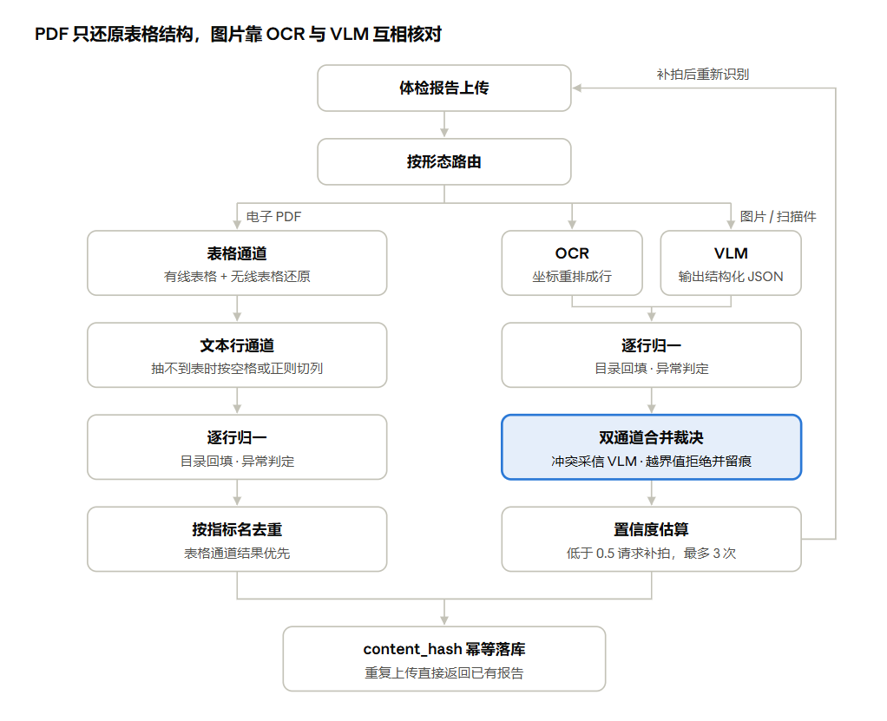

个人健康顾问助手
业务理解
1. 定义
患者上传检验或体检报告后，系统识别出每一项指标的名称、数值、单位和参考区间，再结合本人的历史报告、健康档案和医学资料，生成通俗、带出处的解读。患者看完报告后还可以继续追问。
产品定位是患者教育和医务人员随访的辅助工具。它解释报告写了什么、哪些指标异常、哪些情况还不确定、下一步该找谁咨询。它不做诊断，不做急诊分诊，也不开治疗方案。
| 用户 | 场景 |
|---|---|
| 门诊患者、体检人群（主要用户） | 拿到化验单或体检报告，看不懂；关心异常指标、复查和长期变化 |
| 护士、全科和专科随访团队（次要用户） | 向患者解释结果，做随访 |
【待补】PDF 导出时这张表右侧被截断，第三列（各类用户的痛点）看不全，没有放进来。
目前是个人原型，没有真实的医院用户量。试点容量按一家医院 1–3 个门诊或随访团队来规划，这是设计假设，不是实际数据。
2. 业务闭环
参与角色
| 角色 | 职责 | 状态 |
|---|---|---|
| 患者 | 上传报告，按提示补拍，查看解读，追问，管理个人档案 | 已实现 |
| AI 系统 | 识别指标、计算趋势、检索证据、生成解读、标出不确定信息 | 已实现 |
| 医生 | 审核异常或低置信度的报告，批准后才发布 | 规划中 |
| 知识维护者 | 维护医学资料的来源、版本和授权范围 | 规划中 |
核心业务对象：体检报告和指标、指标目录（标准名称和参考区间）、医学知识证据（指南、病例、论文）、解读报告（带版本）、个人健康档案（病史、用药、过敏等）。
主流程
- 上传：患者上传化验单或体检报告的照片。
- 识别：检查图片质量，抽出每项指标的名称、数值、单位和参考区间，判断是否异常。图片不清楚或识别置信度低时，请患者补拍，最多 3 次。
- 结合个人情况：读取患者的健康档案，比如既往病史和长期用药；如果有历史报告，计算同一指标的变化趋势。
- 查资料：围绕异常指标和患者关心的问题，检索指标目录、指南、病例和论文。证据不够时，请患者补充材料；多次补充后仍不够，就拒绝生成。
- 生成解读：报告分四部分——报告里的事实、可能的含义、还不确定的信息、就医和生活方式上的建议。每条结论都标出依据的来源。
- 校验：用程序核对引用是否真实存在、数值是否和报告原值一致、指标名是否正确、每条建议是否有依据。不通过就重写；重写 3 次仍不通过，就只保留通过校验的章节，建议类章节一律去掉。
- 发布与追问：患者在页面上查看解读和证据卡片，可以继续追问，比如【那晨跑空腹行吗】。
- 沉淀：把本次报告中的关键信息（异常指标、报告里写明的用药等）写进健康档案，并保存本次分析的摘要。下次上传报告时，系统会用到这些历史信息。最后一步和第 3 步首尾相连，形成闭环。
目标闭环与现状的差距
- 医生审核：目标是发布前加一道医生审核，命中以下任一条件就送审，医生批准后才发布：
- 有偏高、偏低或危急的指标；
- 识别置信度低于 0.5；
- 补拍达到上限后被放行。
- 现在报告生成后会直接发布，医生审核还没实现。
- 校验：第 6 步的校验在 9 月 23 日被暂时关掉了，现在不会触发重写。
- 档案写入：第 8 步目前是自动写入，不需要患者确认。患者事后可以在档案页查看、修改和删除。
3. 业务难题
难题一：输入形式多样，质量不可控
- 报告的形态多：手机拍照、扫描件、电子 PDF 都有。
- 照片会有模糊、反光、遮挡、拍歪；
- 每家医院的报告版式不同；
- 表格会跨页、有合并单元格，有的表格没有表格线。
- 提问的方式多：既有【糖化血红蛋白 6.4 偏高吗】这种精确提问，也有【血糖有点高还能跑步吗】这种口语提问。还有【那游泳呢】这种依赖上文的追问。
- 对系统的要求：按输入形态走不同的识别方式；识别不了时，明确请用户补拍，不能硬着头皮生成。
- 现状：网页上传目前只支持图片，PDF 解析只在后台离线任务里能用，还没接到网页上。
难题二：数值必须精确。
- 错一个数，后面全错：指标名、数值、单位、参考区间只要错一个，异常判断和解读就全错了。
- 参考区间不通用：同一个指标，不同实验室的参考区间可能不同，单位也可能不同（mg/dL 和 mmol/L）。
- 错误会被掩盖：OCR 容易把一行的数值对到另一行的指标上。大模型会把错误的数值解释得很通顺，患者根本看不出来。
- 对系统的要求：每个数值都能对回原图；不同识别方式的结果要交叉核对；明显不合常识的值直接拦下；判断不了就标【不确定】，不能猜。
难题三：解读必须有依据，而且不能越界
- 大模型的幻觉：
- 会编出看起来很真实的引用；
- 引用是真的，也可能和结论无关；
- 可能把单个异常值说成确定的诊断。
- 证据之间可能矛盾：一条资料推荐运动，另一条说某些情况下要避免运动。
- 对系统的要求： 每条结论都要绑定证据；区分事实、推断和未知；证据有冲突时，要写明【存在不同建议】；没有证据就不给建议。
难题四：个性化需要历史信息，历史信息又有风险
- 为什么需要历史：同一个指标，对长期吃他汀的人和对健康人，含义不同。多次报告放在一起看趋势，比只看单次更有价值。
- 风险一：档案被污染。检索到的指南内容可能被误当成患者本人的信息写进档案，比如把【每周运动 150 分钟】记成患者的目标；也有人会在对话里写入恶意指令。
- 风险二：隐私。健康信息属于敏感个人信息，泄露的代价很高。
- 对系统的要求： 写进档案前要过一道检查；档案内容加密存储；用户之间严格隔离；患者能查看、修改、删除自己的档案。
难题五：患者的说法和医学术语对不上
- 口语和术语不一致：患者说【坏胆固醇】【转氨酶高】【血稠】，资料里写的是【低密度脂蛋白胆固醇】【丙氨酸氨基转移酶】。按字面去查，很可能一条都查不到。
- 追问缺主语：短追问单独拿去检索，系统不知道【那】指的是什么。
- 对系统的要求：把口语映射到标准术语；追问时带上前文；不同类型的问题，走不同的查找方式。
难题六：处理流程长，中途需要患者参与
- 流程长：一份报告要经过识别、查档案、查资料、生成、校验，耗时以分钟计，中间可能要停下来等患者补拍。
- 重跑代价高：补拍后从头重跑，会重复花大模型的钱，还可能重复写数据库。
- 对系统的要求： 任务能暂停，也能接着跑；已完成的步骤不重做；前端实时看到进度；每份报告花了多少钱可以统计，也能设上限。
一、OCR + VLM 多模态文档解析
业界公开评测里，没有哪一种解析方式能把检验报告的数值稳定读对：中文检验报告上，最好的模型配合 OCR 时数值字段召回约 89%，纯视觉模型只有 72% 左右（MedRepBench）。因此本项目不押单一通道，而是按输入形态分流，用两个错误类型不同的通道交叉核对，核对不了就拒绝并留痕。
1.1 对应业务难题
业务要求患者能直接上传检验或体检报告，来源有三类：电子 PDF、扫描件、手机照片。三类输入出错的方式不同：
- 电子 PDF：文字通常能准确提取，但表格未必能还原。有的表跨页后不再重复表头，有的用合并单元格表示【血常规】这类类别，还有的根本没有表格线。
- 照片和扫描件：问题出在识别环节。OCR 返回的是零散的文字块，块的顺序和表格的行列并不对应，【结果】列和【参考区间】列很容易错位，数值会对到别的指标上。
- 错误会被掩盖：后面的 LLM 会把错数总结得很通顺，报告里就看不出问题了。
1.2 业务拆解
【把一份报告变成可信的结构化指标】可以拆成五个子问题，每一个都可能单独出错：
| 子问题 | 要做到什么 |
|---|---|
| 拿到数据 | 支持照片、扫描件、PDF，判断图片质量 |
| 还原版面和表格 | 知道哪个数属于哪一行、哪一列 |
| 识别字符 | 数字、小数点、↑ ↓ 标记、单位一个不错 |
| 字段归一 | 指标名对应标准编码；单位和参考区间口径一致 |
| 判断可信度 | 知道哪些结果靠得住，靠不住时让用户补拍 |
【待补】PDF 导出时这张表右侧被截断，第三列（每个子问题的典型错误）看不全，没有放进来。
1.3 业界现有做法与优缺点
| 做法 | 代表 | 优点 |
|---|---|---|
| 院内系统直连 | LIS、区域平台跨机构调阅 | 直接拿到结构化原始数据，不存在识别错误 |
| 人工录入 | 患者或客服手填 | 准确，实现简单 |
| 云厂商专用识别接口 | 百度医疗检验报告单识别、腾讯云医疗报告结构化 | 开箱即用；百度接口直接返回项目名、结果、单位、参考区间、结果提示和置信度 |
| 通用 OCR + 模板或正则 | 通用 OCR + 自写规则 | 便宜、可控、可解释 |
| 版面分析 + 表格结构识别管线 | PP-StructureV3、MinerU | 专门做版面和表格，有线和无线表格分别建模；公开评测里表格识别强于通用视觉模型 |
| 端到端视觉大模型 | Qwen-VL、GPT-4o | 能理解版面，对模糊和水印更稳；一步输出结构化 JSON |
| OCR + 大模型后处理 | OCR 文本交给 LLM 抽字段 | 数值字段召回最高 |
【待补】PDF 导出时这张表右侧被截断，「缺点」列看不全，没有放进来。
两组公开评测给出了取舍的数量级：
- MedRepBench 用 1,925 张去标识的中文医疗报告图片（照片、截图和电子文档）测试了项目名、数值、单位、参考区间和异常标记的抽取。LLaMA-4-Maverick 纯看图时数值召回 72.3%，提供 OCR 文本后升到 87.4%；Qwen2.5-VL-32B 的异常标记召回从 84.0% 降到 59.7%。去掉 OCR 后，平均召回下降 10% 到 20%。
- OmniDocBench 的表格子集上，基于 OCR 的 RapidTable 得分 82.5，通用视觉模型 Qwen2-VL-7B 为 71.0；表格旋转后，GPT-4o 从 62.7 跌到 14.2。但在模糊扫描件上，视觉模型反而更稳（编辑距离 Qwen2-VL 0.082，MinerU 0.150，越低越好）。
结论是：管线和 OCR 擅长表格结构和精确字符，视觉模型擅长版面理解和退化图像，两者的错误类型不同。对数值精度要求高的场景，单用哪一种都不够。
1.4 本项目处理方式

左路是 PDF，字符本身可信，只做结构还原；右路是图片，两个通道的结果在合并裁决处互相核对，置信度不够就回到上传要求补拍。
按输入形态路由。 电子 PDF 有文本层，字符本身是准的，不再过 OCR，只做表格结构还原。图片和扫描件同时走 OCR 和 VLM 两个通道，利用二者错误类型不同做交叉核对。
| 输入 | 通道 |
|---|---|
| PDF，有线表格 | 表格通道 |
| PDF，无线表格 | 无线表格通道 |
| PDF，抽不到表 | 文本行通道 |
| 图片、扫描件 | OCR 通道 |
| 图片、扫描件 | VLM 通道 |
【待补】PDF 导出时这张表右侧被截断，第三列（各通道的具体实现）看不全，没有放进来。
PDF 表格还原由 TableParseContext 跨页保存状态：续页没有表头时沿用上一页列映射（条件不满足就不接，宁可漏接不错接）；跨行合并时继承上一个非空名称；跨列说明行和重复表头丢弃；章节标题行清空待继承状态。
双通道合并裁决（merge_channel_metrics，单张图内）：
| 情况 | 处理 |
|---|---|
| 同名同值 | 交叉校验通过，合并成一条 |
| 同名异值 | 采信 VLM；OCR 那条进入 rejected，原因记为「通道冲突采信 VLM」 |
| 只有 OCR 识别到 | 过常识范围表，越界的进入 rejected |
| 只有 VLM 识别到 | 同样过常识范围表，用来挡住 VLM 的幻觉值 |
同名异值时采信 VLM，依据是错误类型：OCR 的典型错误是行列错位，VLM 看整张图，能判断【这个数属于这一行】。常识范围表 COMMON_SENSE_RANGES 只校验白名单里的指标（身高 50–250 cm、收缩压 50–300 mmHg 等），单位对不上时不拦，定性结果直接放行。被拒条目以 channel_review 观察记录写进任务状态，可以追溯。
归一与异常判定（normalize_metric + flag_of）：指标名全角转半角、去掉 ↑↓ 标记；查指标目录回填编码，只有单位一致时才用目录的参考区间，否则保留报告原文；超出区间判 high/low，偏离 2 倍或命中关键项规则（空腹血糖 ≥ 7.0、收缩压 ≥ 140、舒张压 ≥ 90）判 critical，判断不了标 unknown。
置信度、补拍与幂等。 单通道结果乘 0.6；双通道按指标名重合度乘 0.6–1.0。整体置信度低于 0.5 时请求补拍，最多 3 次，到上限后放行并记 VISION_LOW_CONFIDENCE_ACCEPTED。报告级 content_hash = md5(user_id + 体检日期 + 指标集合签名)，重复上传直接返回已有报告。
和业界做法的对应关系。 这套方案是【管线 + 视觉模型】的混合：PDF 走类似版面管线的规则还原，图片用 OCR 和 VLM 互相当参照。它和业界方案的最大区别是【不猜值】：判断不了标 unknown，单位不一致保留原文，续页宁可漏接，没有图片不用 Demo 数据，被拒的值留痕不删。
1.5 现状与差距
- 双通道没有实测：VLM 接口当前返回
model_not_found，冲突裁决没有实测数据。【采信 VLM】是按错误类型定的工程规则，没有用真值校准，而上面的公开评测显示 VLM 在数值字段上不如 OCR 辅助的方案，这条规则需要用人工标注的真实报告重新验证。 - 跨图片冲突：多张图出现同名异值时，
_dedupe_keep_conflicts两条都保留，只打 warning，交给下游处理。 - PDF 未接入网页：Go 上传接口只接受图片，PDF 解析只在 Celery 离线任务里调用。
- 已有实验数据（合成样本）：2 份合成 PDF 上，结构还原把空名率从 2.38% 降到 0，列串位率（多页表 11.1%、无线表 50%）降到 0；合成图片清晰图抽到 5 项，污渍图 4 项，遮挡图 4 项，模糊图 0 项并触发补拍。
- 下一步：用去标识的真实报告建逐字段真值集，可参考 MedRepBench 的口径（项目名、数值、单位、参考区间、异常标记分别统计召回），并与云厂商专用接口做一组对照。
二、多路召回与向量数据库索引优化
业界的主流做法已经收敛到【BM25 + 向量混合召回、按排名融合、再精排】：Anthropic 的实验里，这套组合把前 20 条的检索失败率从 5.7% 降到 1.9%（Contextual Retrieval）。本项目沿用这个骨架，在此基础上加了结构化的 SQL 通道和证据级切块；在自己的小样本上，混合检索提高了首条准确率，精排则出现了负收益。
2.1 对应业务难题
业务问题：用户的问法多样，单一检索方式覆盖不全。
- 精确指标：【糖化血红蛋白 6.4 偏高吗】，需要查数值、参考区间和本人历史；
- 专有名词：【低密度脂蛋白参考区间】，需要字面匹配；
- 口语转述：【血糖有点高还能跑步吗】，需要语义匹配。
另外有两条约束：用户本人的指标数据不能进入共享索引；知识库要能按版本发布和回滚。
技术问题：数据量变大后，索引的内存开销很大。 论文库是长文本，切块后数量远多于知识条目，全部常驻内存的图索引成本高。
2.2 业务拆解
【给一个问题找到对的证据】可以拆成七个环节：
| 环节 | 要解决的问题 |
|---|---|
| 切块 | 检索单元多大、在哪里切，才能既匹配得上，又自带上下文 |
| 查询理解 | 口语转术语、追问补全、决定查哪些库 |
| 召回 | 精确、字面、语义三类问法各自有人负责 |
| 融合 | 多路结果分数尺度不同，如何合并排序 |
| 精排 | 粗排不准时怎么补救，成本和延迟可不可接受 |
| 索引 | 召回率、延迟、内存三者怎么取舍 |
| 过滤与隔离 | 版本、分区、租户过滤不能损失召回；用户数据不能串 |
2.3 业界现有做法与优缺点
检索与融合方式
| 做法 | 优点 |
|---|---|
| 只用向量检索 | 实现最简单，口语问法召回好 |
| 只用 BM25 | 专名和关键词准，可解释 |
| 混合检索 + RRF | 无需分数校准，即插即用；Elastic 在 BEIR 上测得比单路 BM25 的 NDCG@10 高 18%，参数调得好坏只差约 5%（Elastic） |
| 混合检索 + 加权分数 | 校准得好时优于 RRF |
| 召回后加 Cross-Encoder 精排 | 比双塔向量准；Anthropic 建议召回约 150 条再精排到 20 条 |
【待补】PDF 导出时这张表右侧被截断，「缺点」列看不全，没有放进来。
存储引擎
| 方案 | 优点 |
|---|---|
| Elasticsearch / OpenSearch | BM25 成熟，内置 RRF，也支持向量 |
| PostgreSQL + pgvector | 和业务库合一，组件最少 |
| Milvus（2.5 起支持全文检索） | 在 schema 里声明 BM25 Function，插入原文自动生成稀疏向量，查询直接传文本；稠密和稀疏向量在同一个集合（Zilliz 文档） |
【待补】PDF 导出时这张表右侧被截断，「缺点」列看不全，没有放进来。
切块与查询增强
| 做法 | 优点 |
|---|---|
| 固定长度或递归字符切分 | 简单；Chroma 的评测中，200 token、无重叠的递归切分是稳定的默认选择 |
| 语义切分、LLM 切分 | 切在话题边界 |
| 父子块 / 上下文增强 | 小块检索、大块送生成；Anthropic 给每块加 50–100 token 上下文后，失败率降 35%，再加 BM25 降 49% |
| HyDE | 先生成假想答案再检索，无需标注数据（Gao et al.） |
【待补】PDF 导出时这张表右侧被截断，「缺点」列看不全，没有放进来。
向量索引（内存数据来自 Milvus 容量文章）
| 索引 | 内存 | 适用 |
|---|---|---|
| FLAT | 约等于原始向量 | 小数据量或要求全召回 |
| HNSW | 原始向量的 2–3 倍 | 速度和召回优先，内存不紧 |
| IVF_SQ8 | 比 IVF_FLAT 省 70–75% | 资源受限，可接受少量召回损失 |
| DiskANN | 只有部分索引在内存 | 数据量大，可接受约 100ms 延迟 |
2.4 本项目处理方式
整体顺序是：切块 → 查询计划 → 三路召回 → RRF 融合 → 父块扩展 → 按需精排。
切块：按数据形态选策略。 策略由注册表 resolve_text_strategy 选择，优先级是显式参数、环境变量 CHUNK_STRATEGY、自动选择。
- 指标目录、指南要点、病例这类知识条目用
evidence_row：一条拼成一段文本，整条一块，如体检指标 低密度脂蛋白胆固醇 | 编码 LDL_C | 单位 mmol/L | 参考区间 0-3.4。 - 论文等长文本用
semantic_split：相邻句子向量余弦相似度低于 0.55 处断开，窗口上限 512 字、重叠 128 字。没有 embedding 时退回滑动窗口，标签如实记为semantic_window。 - 父子块：同一来源文档（
source_id）的所有条目拼起来，超过 1200 字就生成一个父块（截断到 3000 字），条目本身作为子块，用parent_key指向父块。检索只查子块，命中后换成父块并去重。这和 Anthropic 的上下文增强解决的是同一个问题，但不需要对每块调 LLM。
查询计划。 QueryPlanner 把异常指标、用户提问和健康档案拆成主题，用规则决定每个主题走哪些通道、查哪个分区。每个主题最多 3 个通道，总查询数超过 15 时按 SQL > BM25 > Dense > Image 裁剪。同义词词典覆盖 30 个指标的口语叫法，只追加不替换原词。HyDE 只用在 Dense 一路，剥掉数字，默认关闭。
三路召回。
| 通道 | 负责的问法 | 实现 |
|---|---|---|
| SQL | 精确指标、本人历史 | 查指标目录的参考区间和用户本人指标；必须带 user_id，需要 metric_code 这类结构化条件 |
| BM25 | 专有名词 | Milvus 2.5 BM25 Function，jieba 中文分词，服务端计算；出错时退回 LIKE |
| Dense | 口语转述 | bge-m3，1024 维，COSINE |
SQL 通道是业界通用方案里没有的一路：用户私有数据根本不进向量库，精确数值也不交给向量检索。BM25 实现的演进数据（9 条查询，MRR）：按空格拆词的 LIKE 0.111 → 2-gram 切词 + LIKE 0.718 → Milvus 全文检索 0.944。
融合。 使用 RRF：
rrf_score(d) = Σ_c w_c / (K + rank_c(d))
三路分数量纲不同（BM25 无上界、Dense 是 0–1 余弦、SQL 没有分数），按排名融合最稳。网格搜索最优 K=10，线上取平台期中间的 60；每路召回数 N=20；通道等权。这和 Elastic 的发现一致：小于 60 的 K 在评测上更优，但参数影响不大；加权融合需要带标注的查询来调，本项目没有足够标注，所以不用。知识库和论文库的结果轮流交错合并，避免后拼入的集合排名系统性偏低。
精排。 bge-reranker-v2-m3，由 should_rerank 按需触发：短查询（不超过 12 字）且原词已在首位候选中就跳过；精排失败退回 RRF 结果。业界建议宽召回（约 150 条）再精排，本项目在小样本上得到的方向相反：候选 20 / 50 / 100 条时 Recall@10 为 0.581 / 0.436 / 0.430。
索引按规模分治。
| 集合 | 内容 | 稠密索引 | 实测 |
|---|---|---|---|
| evidence_text | 指南、病例、指标目录 | HNSW，M=32、efConstruction=200、ef=128 | 5,250 个向量、30 条查询：Recall@10 0.977，P95 3.09 ms |
| papers_lib | 论文长文本 | IVF_SQ8，nlist=512 | 2,560 个测试向量：nprobe=32 时 Recall@10 0.99（IVF_FLAT 1.00） |
两个集合都另有一个 BM25 稀疏向量字段，用 SPARSE_INVERTED_INDEX 索引。
HNSW 扫参时 M 影响最大（M=8 / 16 / 32 时 Recall@10 为 0.565 / 0.796 / 0.873）。IVF 对比说明量化本身几乎不损失召回，损失主要来自 nprobe 太小。
服务端预过滤与数据隔离。 过滤条件写进 Milvus 的 expr，在检索时执行，避免 pgvector 那种先检索后过滤导致的召回损失：
tenant_id == "..." and knowledge_version == "..." and source_type in [...] and chunk_role == "child"
knowledge_version 只查已发布版本，知识库可回滚；chunk_role 排除父块。用户私有数据不写入任何向量索引，只能通过带 user_id 的 SQL 通道读取。所有索引都能从 PG 的 parsed_documents 全量重建；9 月 23 日 Milvus 内嵌 etcd 数据目录未挂持久卷、丢失全部索引元数据时，就靠这一点恢复。
2.5 现状与差距
- 混合检索的收益有取舍：92 条查询上 Hit@1 从 0.935 升到 0.967，Recall@10 从 0.692 降到 0.682。
- 精排和 HyDE 样本太小：精排只有 6 条查询且用代理标签，HyDE 有效查询 13 条（Recall@10 0.597 → 0.622，延迟 1.47s → 4.12s）。结论只能作方向参考。
- 单租户：
tenant_id读的是进程级环境变量（默认dev-tenant），schema 只是预留了租户字段。 - 论文库未全量向量化：300 篇中 182 篇完成正文解析，IVF 对比只用了小样本，内存差异没有实测。
- 检索是串行的：
_parallel_retrieve实际是 for 循环，延迟随主题和通道数线性增长。 - 召回深度不一致：agent 里 BM25 的
top_k是 10，和实验定的 N=20 不一致。
三、幻觉防范、上下文压缩与记忆治理
业界治理幻觉和记忆，常见做法是再调一次大模型：让模型判断回答有没有依据，让模型决定记什么、删什么。本项目把能确定的部分改成代码规则：引用、数值、专名由代码校验，压缩只删不改，记忆候选由规则生成。代价是语义层面的判断偏粗；另外，校验门禁目前处于关闭状态。
3.1 对应业务难题
- 解读必须有依据，而且不能越界。 大模型会编出格式正确的引用；引用是真的，也可能和结论无关；可能抄错数值，或把单个异常值说成确定诊断。两条证据方向相反时，模型常常只挑一边下结论。
- 上下文会越来越长。 健康档案、历史报告、检索证据、重写的草稿会很快占满窗口。固定取 20 条在小窗口会溢出，在大窗口又浪费；压缩时又不能改动数值。
- 个性化需要历史，历史又有风险。 长期用药、既往病史会改变解读；但检索到的指南内容可能被当成患者本人的信息写进档案，对话里也可能有人写入恶意指令；健康信息又属于敏感个人信息。
3.2 业务拆解
| 环节 | 要做到什么 |
|---|---|
| 生成前 | 输出结构区分事实、推断、未知、建议，每条结论绑定证据 |
| 生成后 | 验证引用是否存在、是否支持结论、数值和专名是否正确、证据是否冲突 |
| 失败处理 | 重写、按章节降级或拒答，不把不可信的内容发出去 |
| 上下文预算 | 按模型窗口分配证据条数，保证关键证据放得进 |
| 压缩 | 去掉冗余，但不改数值、不丢引用 |
| 记忆写入 | 只记患者本人的信息，挡住投毒和注入 |
| 记忆存储与生命周期 | 加密、去重、可修改、可删除、过时自动降权 |
| 记忆注入 | 控制 token 用量，并让患者看到用了哪些记忆 |
3.3 业界现有做法与优缺点
幻觉防范
| 做法 | 代表 | 优点 | 缺点 |
|---|---|---|---|
| prompt 约束 + 要求附引用 | 系统提示词 | 零成本 | 无法强制执行，模型仍会编出假 ID |
| LLM 自检 / LLM-as-judge | RAGAS faithfulness、NeMo Guardrails self check facts | 能判断语义上是否支持 | 效果取决于模型是否遵循指令；每次多一次调用；综述认为其有效性尚未充分确立，缺少标准 prompt，结果难以复现（综述） |
| 自洽性采样 | NeMo self check hallucination（SelfCheckGPT 变体） | 不需要参考文档 | 要多次采样，成本成倍增加 |
| 专用事实一致性模型 | AlignScore、Patronus Lynx | 比通用大模型更专门 | 要自己部署模型服务；中文医疗场景的效果需要验证 |
| 确定性规则校验 | 自写校验函数 | 可复现、可单测、零调用成本 | 只能检查表面特征（存在性、数值、专名），语义支持判断偏粗 |
上下文压缩
| 做法 | 优点 | 缺点 |
|---|---|---|
| 固定 TopK + 截断 | 简单 | 不随窗口变化，小窗口溢出、大窗口浪费 |
| LLM 摘要 | 压缩率高，可读 | 会改写内容，数值可能被改错，且无法逐条核对 |
| token 级删除 | LLMLingua：用小模型删掉不重要的 token，最高 20 倍压缩，GSM8K/BBH 上约损失 1.5 分 | 结果人读不懂；删除可能丢掉细节，关键数字需要另行核对 |
| 按引用和规则裁剪 | 不改写、可核对 | 会丢掉未被引用但有用的材料 |
长期记忆
| 做法 | 优点 | 缺点 |
|---|---|---|
| 全部历史放进 prompt | 实现最简单 | 成本高，内容会过时 |
| LLM 自主管理记忆 | Mem0：LLM 抽取候选事实，再决定 ADD / UPDATE / DELETE / NOOP；相比全量上下文，p95 延迟低约 91%，token 成本省 90% 以上 | 写什么由模型决定，容易被投毒 |
记忆投毒不是理论风险。MINJA 攻击只通过普通提问，就能在理想条件下实现超过 95% 的注入成功率、70% 以上的攻击成功率；在一个电子病历 Agent 的实验里，记忆库已有正常记录时，攻击成功率降到约 6.7%。研究还发现，用模型置信度做信任分数挡不住措辞巧妙的投毒：一组实验里 82 条被接受的记录中 54 条是投毒。作者建议用外部数据源做校验（论文）。
3.4 本项目处理方式
证据绑定。 报告草稿分为事实、推断、未知和建议四部分，每条结论带 evidence_ids。本轮检索产出的证据 ID 构成引用白名单，【有没有依据】因此变成程序可以检查的内容。
确定性校验（evidence/validator.py，不调用模型）：
| 校验 | 做法 | 失败条件 |
|---|---|---|
存在性 validate_existence | 引用的 ID 必须在本轮证据集内；未传入时回查 parsed_documents | 越界即判伪造；数据库不可用按失败处理 |
支持关系 validate_support | 从结论抽取术语、数值和 2–4 字中文片段，检查引用片段是否包含 | 关键词不在片段里 |
数值 validate_metric_value | 与 health_metrics 中该用户最近一次实测值比对，容差取绝对 1e-6 与相对 0.5% 的较大者；参考区间与 metric_catalog 比对 | 对不上 |
专名 validate_metric_name | 指标名必须在指标目录中 | 不存在，并给出相近候选 |
另有三项检查：refuse_if_no_evidence 在证据为空或事实类结论未绑定有效证据时拒答；validate_advice_has_evidence 要求每条运动和饮食建议至少带一个本轮证据 ID；conflicts.py 按主题归并证据、比较极性词方向，发现冲突时要求报告写明【存在不同建议】。
与业界的 LLM 自检相比，这套校验可复现、没有额外调用，但支持关系和冲突检测只能看关键词和极性词，语义层面的矛盾检测不出来。两者可以叠加：规则挡表面错误，模型或专用一致性模型判断语义支持。
打回、降级和拒答。
- 校验失败产生
CITATION_MISMATCH或NO_EVIDENCE，条件边_citation_gate把流程送回report_draft重写，最多 3 次。重试计数放在_citation_validate节点里，因为 LangGraph 条件边对 state 的修改不会写入 checkpoint，在条件边里计数会一直是 0。 - 三次仍不通过，进入
refuse节点按章节降级：通过的章节保留，建议类章节只要缺证据或方向冲突就降级；没有任何章节通过则整篇拒答。 - 模型调用失败或任务 token 预算用完时，只拼接已抽取的事实，不生成建议。
上下文预算与压缩。 证据预算按下式计算：
证据预算 = 模型窗口 − system prompt − 指标/趋势/档案占用 − 输出预留(4096)
每条证据正文默认截取 200 字，预算充足时放宽到 400 字，evidence_id 和 source_url 始终保留。62 条语料下，8K / 16K / 64K 窗口分别放入 2 / 20 / 62 条。超过阈值时按三层规则压缩：证据只留被引用的条目，观察记录按名称去重，讨论只留结论。和 LLM 摘要、LLMLingua 不同，这里只删不改，数值不可能被改写。1 / 2 / 3 倍语料下，估算 token 分别从 13,431 / 27,008 / 40,610 降到约 1,862，引用完整率 100%，没有引入新数字。
记忆治理。
| 层 | 内容 | 存储 |
|---|---|---|
| 工作记忆 | 任务执行中的图状态 | LangGraph state + PG checkpoint |
| 情景记忆 | 历史体检的分析摘要 | 报告发布后写入，按指标编码匹配 |
| 档案记忆 | 病史、用药、过敏、健康目标、运动基础 | memory_items 表，加密存储 |
- 写入门禁（
MemoryCurator）：来源为document、webpage、report的候选直接抛异常；匹配注入式措辞（【请记住】【忽略之前的所有指令】等中英文正则）或长度超过 100 字也抛异常；置信度低于 0.3 的候选直接丢弃。与 Mem0 让模型决定记什么不同，这里的候选由规则从患者本人的报告里生成，检索证据永远不进记忆。 - 加密与去重：正文用 AES-256-GCM 加密，密钥由
KMS_KEY_DEV经 SHA-256 派生，每次随机 12 字节 nonce，格式与 Go 侧crypto/kms.go一致；用content_hash = SHA-256(明文)判重，无需解密。 - 生命周期：更新走版本链（插入新行，旧行标记
superseded_at）；自动生成的记忆 90 天未被佐证，置信度乘 0.5，低于 0.3 进入待确认队列，由 Celery beat 每日执行；支持单条和全部软删除；写入、更新、删除、衰减、确认都记审计日志。 - 注入预算：
build_injection把档案和相关情景记忆组装成文本，默认上限 500 token，同时生成injection_items供前端展示。
3.5 现状与差距
- 确定性校验处于关闭状态：9 月 23 日为先做召回实验，
_citation_validate中的校验代码被注释掉，节点直接放行，打回流程不会触发。校验函数只在函数级测试中验证过：伪造 ID、无关引用、虚构指标名、缺证据的建议都能拦下。 - prompt 与规则冲突：报告 prompt 允许饮食建议的
evidence_ids为空，与validate_advice_has_evidence的规则冲突。 - 记忆自动写入：9 月 20 日起，主流程以
confirmed=True直接调用commit，不再需要用户确认；只有衰减到阈值以下的条目需要确认。 - 部分门禁未生效：来源检查和低置信丢弃写在
propose_candidate里，主流程绕过它直接调用commit，而commit只做注入检测和去重。实际起保护作用的是候选的生成方式：来源为metric_abnormal或report_statement，置信度固定在 0.5–0.6。 - 去重哈希未加盐：【高血压】这类短内容可以通过字典反推。
- 前端展示待确认：
ReportView.tsx开头注释提到【记忆注入】，但组件代码里没找到对应渲染逻辑。 - 注入防护的边界：正则只覆盖已知措辞；结合 MINJA 的研究，更稳妥的方向是用外部数据源核对写入内容，比如用药信息与报告原文或处方记录对照。
参考资料
文档解析
- MedRepBench: A Comprehensive Benchmark for Medical Report Interpretation
- OmniDocBench: Benchmarking Diverse PDF Document Parsing
- Seeing is Believing? Mitigating OCR Hallucinations in Multimodal LLMs
- PaddleOCR PP-StructureV3 文档
- 百度智能云：医疗检验报告单识别
- 腾讯云：医疗报告结构化
- 七部门《关于进一步推进医疗机构检查检验结果互认的指导意见》报道（IT之家）
检索与索引
- Anthropic: Introducing Contextual Retrieval
- Elastic: Improving information retrieval in the Elastic Stack: Hybrid retrieval
- Zilliz: Full Text Search
- Zilliz: Demystifying the Milvus Sizing Tool
- On pgvectorscale and hybrid search without an Elasticsearch sidecar
- Chroma: Evaluating Chunking Strategies for Retrieval
- Gao et al.: Precise Zero-Shot Dense Retrieval without Relevance Labels (HyDE)
幻觉、压缩与记忆